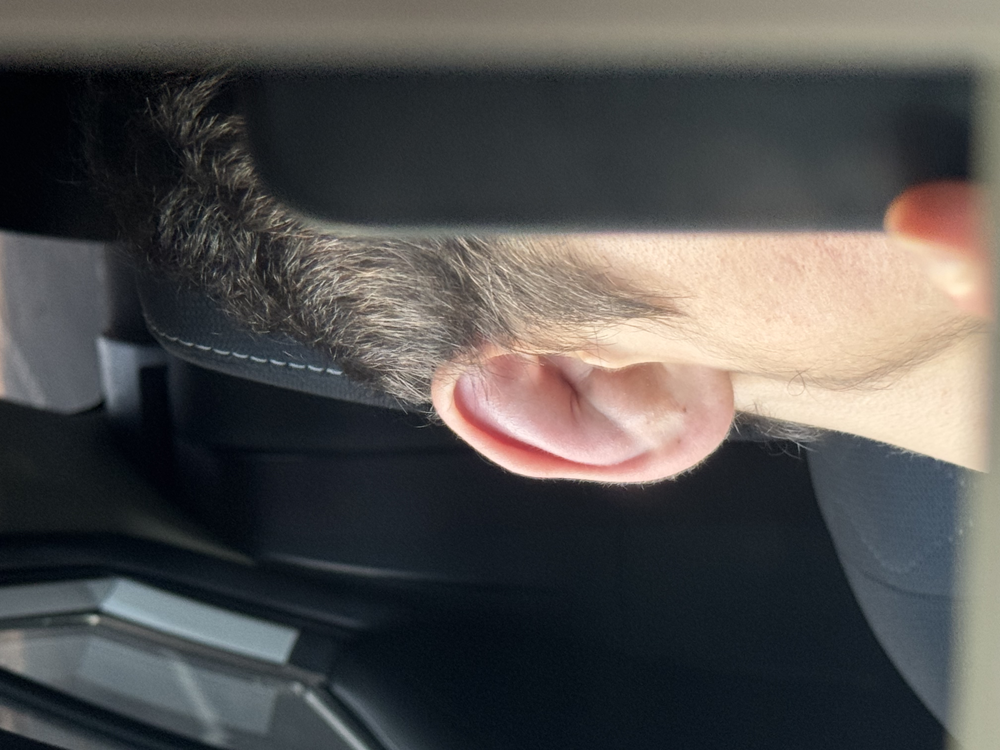

Before every competition, a wrestler goes through one of the most physically demanding rituals in all of sport — cutting weight. No water. Reduced food. Sauna sessions. Sweat suits. All to reach the required weight class by weigh-in time.
The video above is not a training clip. It is preparation. It is the cost of competing. Most athletes never experience this. Wrestlers do it before every single tournament.

Cauliflower ear develops from years of repeated impact on the mat. Cartilage breaks down and reforms differently. It cannot be faked. It cannot be bought. It can only be earned through years of genuine wrestling. If you see this ear, you know this person has been on the mat — really on the mat — for a very long time.
A broken rib is not just a physical injury. It is weeks of not breathing without pain. Months away from training. The slow rebuild of conditioning that took years to build. The mental challenge of watching time pass while your body heals.
Most people stop here. For a wrestler, coming back from a broken rib and returning to competition — not just to participate, but to win a state title — is what separates athletes from champions.
Wrestling has three competitive disciplines. Understanding the differences explains what Greco-Roman truly demands.
"In Greco-Roman, there is nowhere to hide. No legs to hold. Just two athletes — chest to chest, strength against strength, technique against technique."
Two-time World Champion. Olympic Gold Medalist. One of the most technically pure wrestlers in history. Adam Saitiev is a freestyle wrestler — yet a Greco-Roman specialist studies him obsessively.
That is what real wrestling intelligence looks like. Greatness transcends style. Saitiev's sense of positioning, his pressure, his relentlessness — these principles transfer across any discipline.
"Even across styles, greatness is greatness. Saitiev taught me what dominance looks like."
Adam Saitiev — two-time World Champion · Olympic Gold Medalist
Foxcatcher (2014) — Official Trailer · Sony Pictures
Foxcatcher (2014) tells the true story of Olympic champion Mark Schultz — a film that captures the psychology, the isolation, the sacrifice, and the weight of being a wrestler at the highest level. Every serious wrestler recognizes something real in this film.